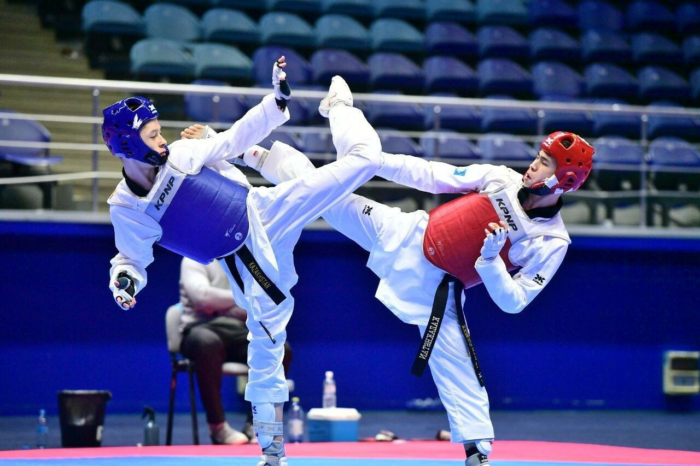
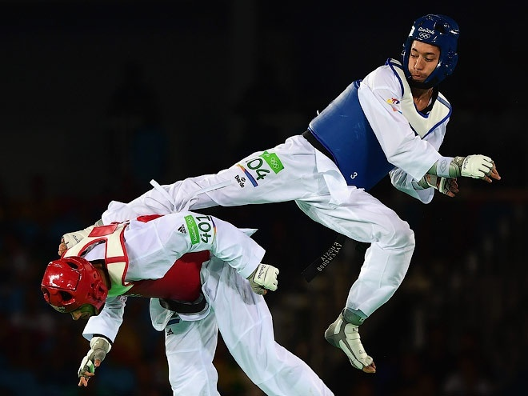
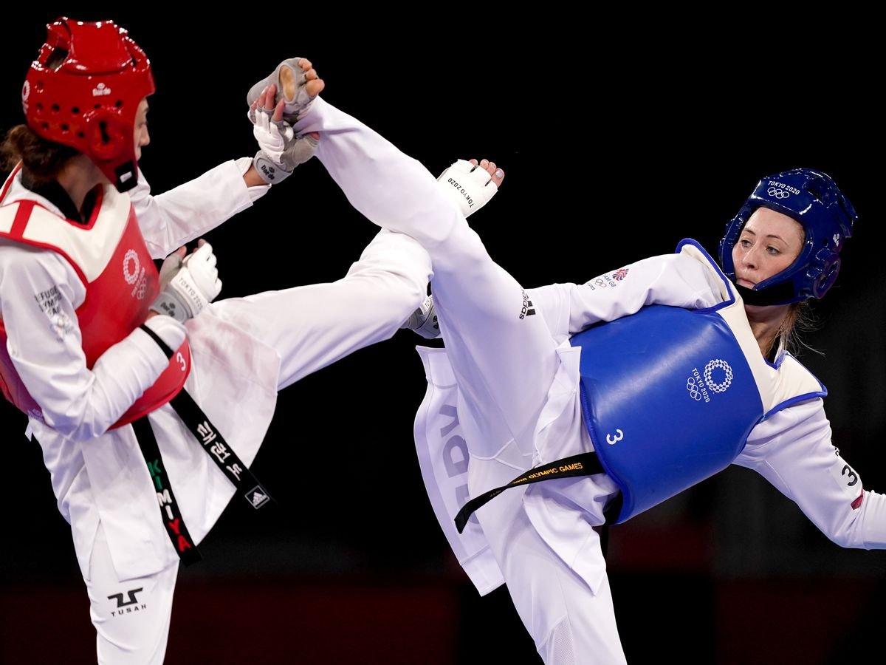
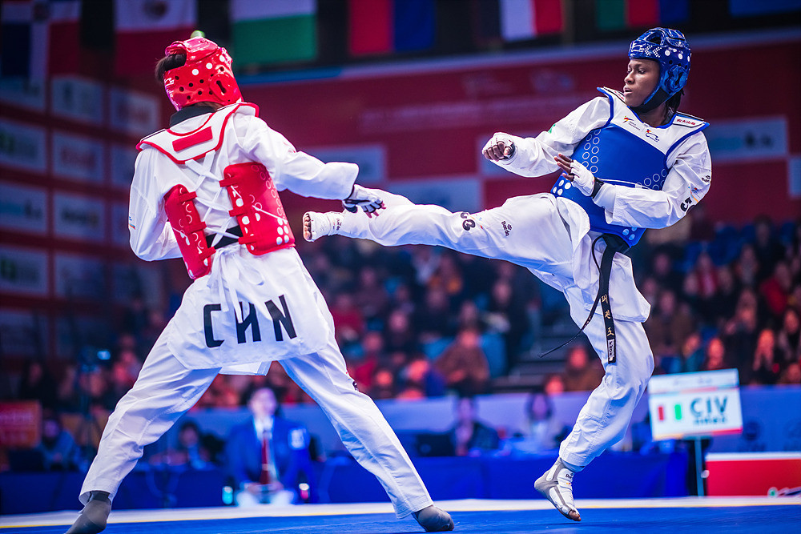

Taekwondo - koreańska sztuka walki charakteryzująca się aktywnym wykorzystaniem kopnięć w walce.




Z definicji, "Taekwondo" oznacza system duchowego treningu i technik samoobrony bez broni, wraz ze zdrowiem, a także umiejętne wykonywanie uderzeń, kopnięć, bloków i skoków wykonywanych gołymi rękami i stopami w celu pokonania jednego lub więcej przeciwników.